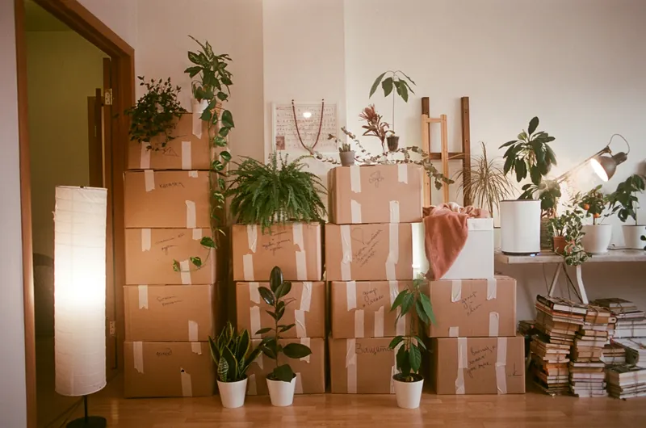

Practical guidance for families, and everyday stories from our residents, nurses, chefs and gardeners.

Featured article
Family guide
Settling in: a gentle guide to the first month
What to bring, when to visit and how to help your parent feel at home, from the nurse who welcomes every new resident. A calm, honest walk through the first four weeks, written for the family as much as for the person moving in.
One short email with the latest journal pieces, the month's outings and the tea-room menu. No spam, and you can leave at any time.
The first month is the hardest part of any move, and it is usually harder for the family than for the person moving in. After twelve years of welcoming new residents, I can promise you that the strange, unsettled feeling passes. Most people tell us that by week three, Thymewood has started to feel like theirs.
Bring less than you think, but bring the right things. A favourite chair, the bedside clock, a few framed photos and the blanket from the back of the sofa matter far more than a full wardrobe. We will hang pictures, set up the radio and label everything on the first afternoon, so the room looks lived in before bedtime.
Visit often, but keep visits short at first. Twenty minutes over a cup of tea every day does more good than one long, emotional afternoon a week. If your mum asks to come home, that is normal: acknowledge the feeling, talk about something she enjoyed that day, and tell her when you will be back.
We will call you at the end of the first week and again after a month to talk through how things are going: sleep, appetite, friendships, anything that worries you. And you can always ring me. No question is too small, and no call is a nuisance.
Every Friday at half past two, the lounge chairs go back against the walls and the music goes up. Our seated dance class is the loudest hour of the week, and it is also one of the most useful. Moving to music builds strength, balance and confidence without ever feeling like exercise.
You do not need to run a marathon after eighty. Ten minutes of gentle movement each day, such as standing up from a chair five times, a slow walk to the garden or ankle circles during the news, makes a real difference to how steady people feel on their feet.
Our physiotherapist reviews everyone's mobility when they arrive and suggests a few simple movements to build into the day. We keep the goals personal: walking to the dining room without a frame, reaching the top shelf, getting down the garden to see the roses.
If you are visiting on a Friday, come and join in. Grandchildren are especially welcome. Nobody minds if you cannot keep time.
I came to Thymewood with two suitcases and a packet of seed potatoes. Jo on reception laughed, but by April we had cleared a bed by the greenhouse, and the Kitchen Garden Club was born. There are nine of us now, plus a robin who supervises.
Spring is for planning and arguing about varieties. In May the runner beans go in against the old brick wall, and by July we are handing bowls of them to Marco in the kitchen. Nothing tastes quite like a bean you watched grow from your own window.
Autumn is apples and the fig tree. I have spent two years trying to get that fig to fruit properly, and this year it finally gave us eleven. We ate them with honey and cream, and I am not ashamed to say I had three.
Winter is quieter: seed catalogues, cups of tea in the greenhouse and plans for next year. If your father or mother loved their garden, tell them there is always a trowel waiting here.
Appetites change as we get older. Some residents want three proper meals a day; others prefer five small ones and a slice of cake at four. Our job in the kitchen is to make sure everyone eats well, whatever their appetite or diet, without anyone feeling singled out.
We cook everything fresh on site, from one seasonal menu. The same shepherd's pie can be served as it is, made softer for someone who finds chewing difficult, or fortified with extra butter and cream for someone who needs to put weight back on. It looks the same on the plate, and that matters.
I meet every new resident in their first week to ask about favourite dishes, foods they cannot stand, and what their mother used to cook. Those conversations end up on the menu: Walter's beef stew, Dorothy's lemon drizzle, a proper curry on Thursdays.
Families are welcome to join any meal for a small charge. Sunday lunch is the busiest and, I think, the best.
For someone living with dementia, the world can feel noisy and unpredictable. Much of our work in memory care is about making the day feel calm and familiar again, through steady routines, kind faces and spaces that make sense.
We keep the same small team of carers on each floor, so residents see faces they recognise. Meals are at the same times each day, the corridors are colour-coded, and every bedroom door carries a memory box with photos and keepsakes chosen with the family.
Activities are short, hands-on and done together: a jigsaw on the coffee table, folding warm laundry, sorting buttons, or listening to songs from the 1950s. These are not ways to pass the time. They give people a sense of purpose and often bring back memories and conversation.
If your parent has recently been diagnosed, please come and talk to us. We can explain what memory care looks like day to day, and how it can grow with them as their needs change.
Not every family lives round the corner. Many of our residents have children across the country and grandchildren overseas, and staying in touch makes a huge difference to how settled and happy they feel.
Every floor has a tablet set up for video calls, and our team will book a quiet time, hold the screen and help with the buttons. Several residents now send voice notes to their grandchildren, which turns out to be much easier than typing on a small phone.
With your parent's permission, we can also add you to our private family updates. You will receive a short note and a photo or two each week: who came to tea, what they made in the craft room, how they are sleeping.
Old-fashioned ways still work beautifully too. We post letters every weekday, and the reception team reads cards aloud for anyone whose eyesight is failing.
The Outings Committee meets on the first Monday of the month, and we take our job seriously. This summer we voted for the coast, and on a bright July morning fourteen of us set off in the minibus with two carers, two wheelchairs and a very large flask of tea.
The staff had planned everything: a bench with a view, accessible toilets nearby, a short level walk along the front and a table booked for fish and chips. Nobody had to worry about anything except whether to have mushy peas.
Some of us had not seen the sea in years. Margaret paddled with her shoes in her hand, and Frank told everyone about his first job on the pier in 1958. We were back for supper, tired and sunburnt and very pleased with ourselves.
Next on the list is the garden centre in September and a Christmas concert in town. If your relative would like to join the committee, the door is always open.